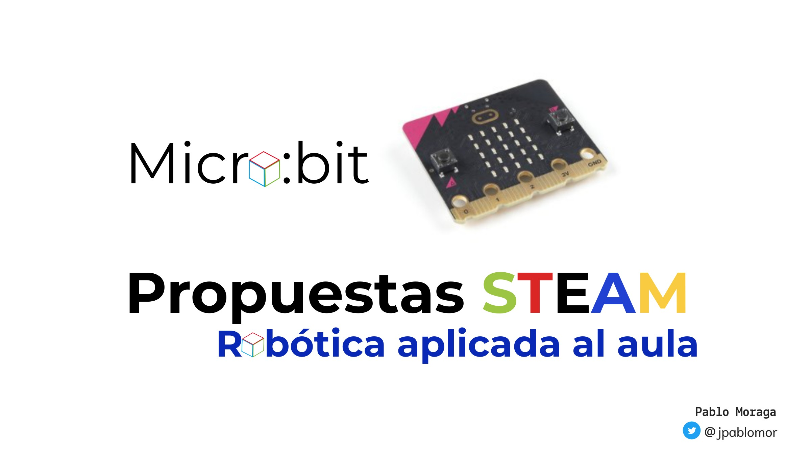
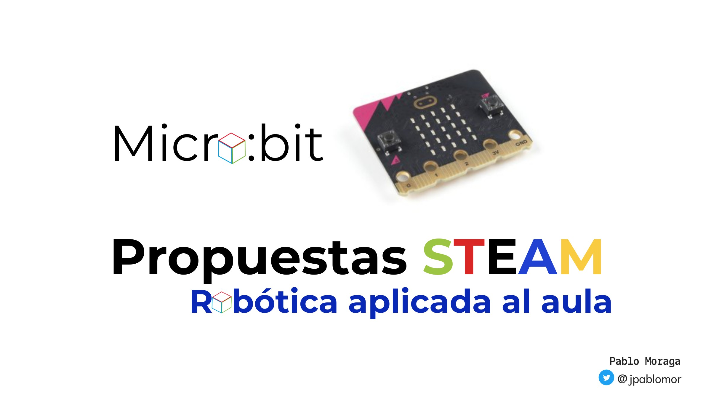
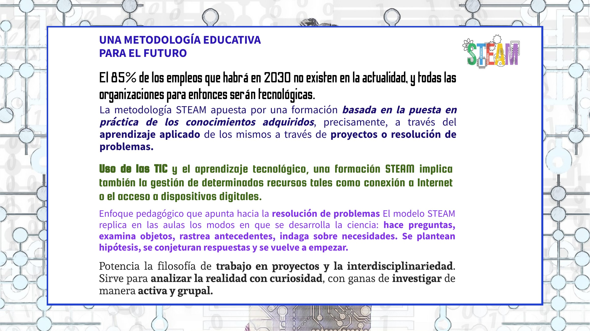
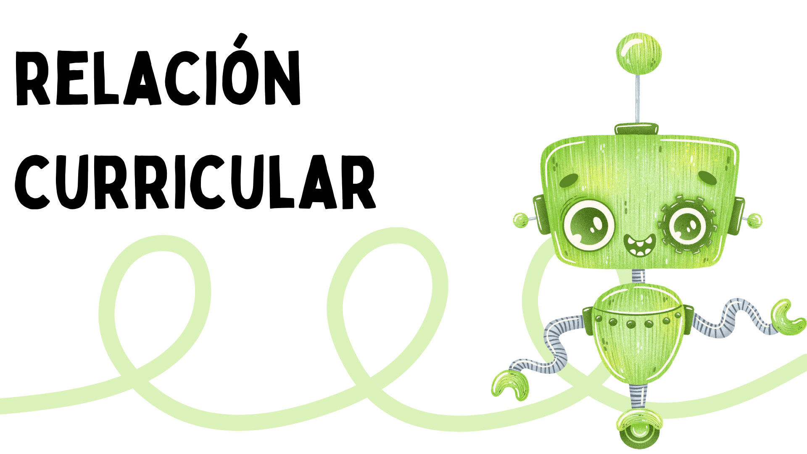
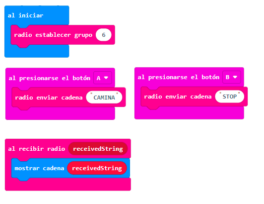

Interactuando con el mundo con Micro:bit



La placa micro:bit v.2, la segunda versión de esta placa programable creada con una clara intención educativa, con un tamaño reducido, un aspecto llamativo y con múltiples sensores y actuadores la convierten en la placa ideal para comenzar la programación en Educación Primaria. Estas características, junto a las múltiples posibilidades de programación como el entorno por bloques MakeCode de Microsoft o Microblocks la hacen un recurso valiosa para iniciarse en la robótica, el pensamiento computacional y la programación.

A través de https://archive.microbit.org/es/ se puede seguir un plan educativo para docentes relacionado con las materias curriculares con pequeñas lecciones en las que se puede crear con distintos lenguajes de programación.


Selecciona la opción que consideres correcta.
Falso
El bloque PARA SIEMPRE:
Ejecuta de forma infinita los bloques que se encuentren en su interior
Utiliza la micro:bit para que reproduzca tu nombre y apellidos utilizando los dos pulsadores.
Imagen del proyecto
Haz un corazón palpitante utilizando tres iconos distintos
Imagen del proyecto
Convierte tu micro:bit en un podómetro (contador de pasos) para ayudarte a controlar cómo de activo eres - ¡y de paso aprender algo de programación!
Este programa usa el acelerómetro del micro:bit como actuador. Cuenta cuántas veces se ha agitado el micro:bit y almacena este número en una variable llamada "pasos"
Utiliza un botón para poner el contador a 0.
Imagen del proyecto

El objetivo de esta misión es utilizar la placa micro: bit para crear una alarma o despertador que se active con el nivel de luz ambiental utilizando la matriz de led de la propia placa. Programaremos la tarjeta para que se active con una señal sonora y lumínica cuando el sensor de luminosidad sea superior a 20. Mientras tanto, la alarma o despertador permanecerá apagado.
Si te atreves, realiza una iluminación progresiva.

 |
 |
 |

Criterios de Evaluación para el área de Conocimiento del Medio de 5º curso de Educación Primaria.
| 1.1.a | Utilizar recursos digitales de acuerdo con las necesidades del contexto educativo de forma segura y adecuada, buscando información, comunicándose y trabajando de forma individual y en equipo, comenzando a realizar actividades en red, creando contenidos digitales sencillos, interpretando y organizando la información y aumentando la productividad y eficiencia en el propio trabajo. |
| 2.1.a. | Demostrar y tratar de mantener la curiosidad sobre un tema relacionado con el medio natural, social o cultural propio de su entorno, formulando preguntas y realizando predicciones razonadas. |
| 2.3.a. | Iniciarse en el diseño y realizar experimentos guiados, cuando la investigación lo requiera, utilizando diferentes técnicas de indagación y modelos, empleando de forma segura los instrumentos y dispositivos adecuados, realizando observaciones y mediciones precisas y registrándolas correctamente. |
| 3.1.a. | Presentar problemas de diseño que se resuelvan con la creación de un prototipo o solución digital, iniciando la evaluación de las necesidades del entorno y estableciendo objetivos concretos. |


Enlace al código del proyecto https://makecode.microbit.org/_bV1KxxemuWpd
¡Silencio, se estudia! En esta misión vas a crear un chivato de ruido. Crea un programa que muestre una cara triste cuando el nivel de sonido recibido por el micro integrado en la placa sea alto, estableciendo previamente un umbral de sonido alto. Utiliza una melodía junto a la cara triste para avisar del nivel de sonido alto en el aula.
Variante: modifica la programación para que se grafique el nivel de ruido en tiempo real que recibe el micro integrado en la placa, estableciendo un umbral de sonido alto y en el momento de superar dicho umbral se reproducirá una melodía.
|
|
 |
 |
|
1.1.a |
Utilizar recursos digitales de acuerdo con las necesidades del contexto educativo de forma segura y adecuada, buscando información, comunicándose y trabajando de forma individual y en equipo, comenzando a realizar actividades en red, creando contenidos digitales sencillos, interpretando y organizando la información y aumentando la productividad y eficiencia en el propio trabajo. C.M 5º Curso |
| 3.1.a. | Producir obras propias básicas, utilizando algunas posibilidades expresivas del cuerpo, el sonido, la imagen y los medios digitales básicos y mostrando confianza en las capacidades propias. ART. 5º Curso |
| 3.2.a. | Producir algunas propuestas para expresar con creatividad ideas, sentimientos y emociones a través de diversas manifestaciones artísticas, utilizando los diferentes lenguajes e instrumentos a su alcance, mostrando confianza en las propias capacidades y perfeccionando la ejecución. ART. 5º Curso |
 Enlace al código del proyecto https://makecode.microbit.org/_JMigzJXk5g0v
Enlace al código del proyecto https://makecode.microbit.org/_JMigzJXk5g0v
 Enlace al código del proyecto https://makecode.microbit.org/_Vz8Ty14W7ieR
Enlace al código del proyecto https://makecode.microbit.org/_Vz8Ty14W7ieR
El objetivo de esta misión es crear un juego para trabajar probabilidad y el azar. La bola de cristal tratará de adivinar tus preguntas utilizando los bloques de entrada (agitar) para que la micro:bit muestre varias respuestas posibles al azar en la matriz de leds.
Recuerda utilizar respuestas cortas para agilizar el juego.
|
|
 |
|
| 6.2.a. | Comenzar a comunicar en diferentes formatos las conjeturas y procesos matemáticos, utilizando lenguaje matemático adecuado, con el propósito de transmitir información matemática. |
| 4.2.a. | Comenzar a emplear herramientas tecnológicas adecuadas en la investigación y resolución de problemas. Mat. 5º Curso |

Enlace al código del proyecto https://makecode.microbit.org/_7cRLbH45ghPi
El objetivo es diseñar un juego al que llamaremos Bomba:bit simulando que la placa es un dispositivo que puede explotar al alcanzar un tiempo determinado. Para ello, utilizaremos alguno de los bloques de entradas (botón A) para comenzar a jugar y con los bloques avanzados de juego y matemática (azar) crearemos una cuenta atrás que varíe entre dos números elegidos.
|
|
 |
|
El microsegundo es la unidad de tiempo que equivale a la millonésima parte de un segundo. Se abrevia μs
60 segundos = 60000 milisegundos.
3.1.a. Participar en actividades de carácter motor, autorregulando su actuación, controlando y gestionando las emociones negativas, expresándolas de manera adecuada ante sus iguales. E.F 5º Curso
3.2.a. Respetar las normas consensuadas, así como las reglas de juego, actuando con deportividad y juego limpio, afrontando los conflictos de forma dialógica y con asertividad. E.F 5º Curso

Enlace al código del proyecto https://makecode.microbit.org/_8JzL7wR5ebye
Esta misión es muy útil para visibilizar el apoyo a la inclusión social de las personas con discapacidad. Una actividad que puedes realizar el 3 de diciembre que se celebra en todo el mundo el Día Internacional de las Personas con Discapacidad.
Vas a programar la placa, para realizar un juego por parejas, indicando la dirección en la que tiene que desplazarse según las instrucciones de nuestra micro:bit. Utiliza los bloques de entrada de inclinación para que ofrezca una señal visual en la matriz de led y un sonido distinto según la orientación de la placa. De esta manera, ofrecemos instrucciones al compañero que se desplazará con los ojos tapados. Realízalo después con los oídos tapados ayudándote del apoyo visual.
|
|
|
 |
| 3.3.a. | Poner en juego en situaciones de prácticas motrices habilidades sociales de diálogo y resolución pacífica de conflictos, respetando cualquier tipo de diversidad, demostrando una actitud crítica y un compromiso activo frente a los estereotipos, las actuaciones discriminatorias y la violencia, teniendo en cuenta el fomento de la igualdad de género. E.F 5º Curso |
| 2.1.a. | Comparar, comenzar a seleccionar y emplear entre diferentes estrategias para resolver un problema tomando decisiones, aplicándose en la resolución y justificando la estrategia seleccionada. Mat. 5º Curso |

Enlace al código del proyecto https://makecode.microbit.org/_YrpWgec4EMiF
Nuestras placas pueden comunicarse entre ellas. Vamos a crear un programa usando la función radio para enviar un mensaje secreto de una micro:bit a otra. El mensaje debe mandar dos órdenes distintas utilizando las entradas (pulsador A y B) y el bloque grupo de radio (indicando el mismo número para cada placa).
|
|
 |
 |
Enlace al código del proyecto https://makecode.microbit.org/_PzrghYTpTAYR
Para este proyecto, te ofrezco algunos programas muy sencillos que puedes utilizar para simular distintos dispositivos de una casa inteligente.
Un termostato controla la temperatura del hogar y acciona un dispositivo en función del nivel de temperatura. Programa un termostato que muestre la temperatura en ºC cada cierto tiempo. Como actuador, utilizaremos la matriz de leds que mostrará un sol al superar los 25º y un copo de nieve con la temperatura por debajo de los 10º.
En este proyecto vamos a trabajar:

Imagen del proyecto
Accede al código del proyecto https://makecode.microbit.org/_JUJiyCMirDJY
Es importante concienciarse en el ahorro energético y el aprovechamiento de la luz solar en el hogar. Cada vez resulta más habitual encontrar luces inteligentes que se regulan dependiendo de la luz ambiente. Para esta tarea, vas a utilizar MakeCode para programar la iluminación gradual de leds dependiendo de la luz externa recibida.
En este proyecto vamos a trabajar:
Imagen del proyecto
Accede al código del proyecto https://makecode.microbit.org/_2La5tARFy689
Utilizamos un servomotor para controlar una persiana del hogar con dependiendo del nivel de luz. Cuando la luz ambiente sea baja, el servomotor subirá para dejar pasar la luz del exterior y en caso contrario la persiana bajará. Podemos utilizar la matriz de leds para proporcionar algún tipo de información.
En este proyecto vamos a trabajar:
Imagen del proyecto
Accede al código del proyecto https://makecode.microbit.org/_b40eFYEHCRL3
En esta ocasión vamos a configurar la placa para conocer las condiciones del suelo y saber si se encuentra la tierra seca o húmeda. Es importante que recuerdes que el suelo posee resistencia eléctrica que depende de la cantidad de agua y nutrientes que contiene. Es decir, actúa como una resistencia variable en un circuito eléctrico.
La combinación de agua y nutrientes del suelo hace que el suelo tenga algo de conductividad. En nuestra placa micro:bit el valor de lectura será de 0 a 1023.
Utiliza los botones de la placa para recibir información de la variable (humedad).
En este proyecto vamos a trabajar:
| Para medir esto, leemos la tensión en el pin P0 usando un pin analog red pin (lectura analógico) que devuelve un valor entre 0 (sin corriente) y 1023 (corriente máxima). El valor es un gráfico en la pantalla usando plot bar graph un (gráfico de barras de trazado). |
Imagen del proyecto
Enlace al código del proyecto https://makecode.microbit.org/_1CKffgU9hW3t
| https://archive.microbit.org/es/ | Recursos para micro:bit para educadores |
| https://github.com/pedroruizf/microbit/blob/master/makecode/retos_microbit_makecode.pdf | Fantásticos recursos de Pedro Ruiz para programar micro:bit con MakeCode a través de retos. |
Plataforma oficial MakeCode de Micrsoft https://makecode.microbit.org/
MicroBlocks https://microblocks.fun/ es un lenguaje de programación de bloques similar a Scratch para aprender computación física con placas educativas de microcontroladores como micro:bit entre otras. De las mejores opciones para programar esta placa.
Existen otras posibilidades y entornos como Phyton o Scratch (con la extensión para microbit).
Además puede utilizarse con tablet Android o iPad (con aplicación Tickle)
Autoría del proyecto: Pablo Moraga
Obra publicada con Licencia Creative Commons Reconocimiento Compartir igual 4.0
Obra publicada con Licencia Creative Commons Reconocimiento Compartir igual 4.0


{kind=link}
{kind=link}
{kind=link}
{kind=link}
{kind=link}
{kind=link}
{kind=link}